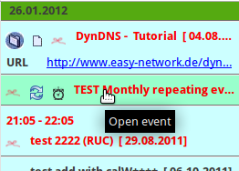

Reminderfox -- Das Dialog Fenster
Reminderfox -- Das Dialog Fenster
Reminderfox -- Das Dialog Fenster
Reminderfox -- Das Dialog FensterMit dem ReminderFox Aufruf wird das 'Dialog Fenster' mit seinen drei Bereichen geöffnet:
Inhalt |
Die Dialog Menüleiste bietet die wesentlichen Zugriffsmöglichkeiten für alle Termine und Aufgaben:
Die Bedienelemente des Menüs sind:
Das Foxy Symbol öffnet ein weiteres Menü mit:

 |
Die Schaltfläche [Termine] öffnet ein Menü mit allen Listen (Termine, Aufgaben, Benutzerlisten)
Nach der Auswahl der erforderlichen Liste wird der Titel der Schaltfläche entsprechend geändert. |
 |
Der letzte Menüpunkt gestattet den direkten Aufruf der "Einstellungen .." mit dem Tabulator "Listen". So kann die Verwaltung der Listen einfach aufgerufen werden. |
 |
Die Schaltfläche [Vergrößerungsglas] zeigt/verbirgt die Box [Textsuche / Filter/Ansichten]. |
 |
|
| Der eingeblendete Bereich [Textsuche / Filter/Ansichten]
hat zwei hilfreiche Such- und Filter Funktionen:
Die linke Text Box dient zur Suche von Ereignissen mit Hilfe einer Texteingabe. Die Suche basiert auf den Attributen der Termine/Aufgaben: Beschreibung, Kategorie, Notiz, Ort. Es wird in all diesen Bereichen gesucht. Die Suche beginnt mit Eingabe eines Zeichens und wird mit jedem weiteren verfeinert. Die Liste zeigt direkt das Suchergebnis. Um auf die Suche aufmerksam zu machen, ändern sich die Listen-Überschriften zu blau/fett, Das blaue Icon [X] dient zum Löschen des Suchtextes. Die Schaltfläche rechts neben der Textsuche dient zur Einschränkung eines Zeitbereiches, d.h. nur die in dem gewählten Zeitbereich liegenden Termine/Aufgaben erscheinen dann in der Liste. Die ersten 7 Menüpunkte stehen für eine Auswahl eines bestimmten Zeitbereiches: Alle Ereignisse, ausgewählter Monat, Woche oder Tag, nächste Woche oder alle kommenden Ereignisse. Ansichten -- Der zweite Teil des Menüs bietet eine flexible, konfigurierbare Möglichkeit zur Filterung der Liste. Hierbei wird nach Textmustern und/oder Zeitbereichen selektiert/filtert. Standardmäßig sind einige Ansichten Definitionen vorhanden. Zusätzlich können über einen "Ansichteneditor" neue Definitionen hinzugefügt werden. Weitere Details sind in der generellen Dokumentation zu finden. Die [Filter/Ansicht] Auswahl wird im Titel des ReminderFox Dialoges angezeigt, zB: ReminderFox [Gewählte Woche]. Die Schaltfläche [Vergrößerungsglas] schließt/öffnet die Box [Textsuche / Filter/Ansichten]. Im geschlossenen Zustand sind die Textsuche und gewählte Auswahl NICHT deaktiviert! Der Dialog Titel und das modifizierte Vergrößerungsglas erinnern aber an diese Einstellung. Ebenfalls wird die Einstellung von Filter und Ansicht beim Schließen des ReminderFox Dialoges gespeichert und beim nächsten Aufruf wieder verwendet. |
|
Die Datumsauswahl ('Date Selector') kontrolliert welches Jahr / welcher Monat in der Liste und dem Kalender angezeigt wird.
 Ein Mausclick auf das Kalendersymbol öffnet ein kleines Panel mit [Heute] und [OK] sowie eine zusätzliche Box.
Ein Mausclick auf das Kalendersymbol öffnet ein kleines Panel mit [Heute] und [OK] sowie eine zusätzliche Box.
Mit der rechten Maustaste wird direkt das "heutige" Datum für die Einstellung genommen, ebenso wie mit [Heute] bei geöffnetem Panel.
Ebenfalls kann die Punkttaste [.] genommen werden, siehe auch Tastenfunktionen.
Die erste geöffnete Box gestattet es ein beliebiges Datum zu wählen. Zunächst Tag, Monat oder Jahr aktivieren, dann mit den Pfeiltasten in-/dekrementieren.
Die in der Abb. rechts dargestellte Box, geöffnet mit [v] Taste biete eine weitere Möglichkeit das Datum einzustellen.
Jede der dargestellten Möglichkeiten kann je nach Belieben angewendet werden und ändert das "gewählte" Datum.
[Verwerfen/Undo] Schaltfläche

[Verwerfen] ist relevant für alle neuen und geänderten Ereignisse.
Wird die Schaltfläche benutzt, gehen alle ungesicherten Änderungen -- nach Bestätigung -- verloren, es besteht keine Möglichkeit sie wieder herzustellen!
[Speichern/Save] Schaltfläche

Alle neuen und geänderten Ereignisse werden in die "Reminder"-Datei (ICS) gespeichert. Der Haupt-Dialog schließt nicht!
Mit dem Schließen des Haupt-Dialoges werden alle neuen / geänderten Ereignisse gespeichert.
Zum Schließen des Haupt-Dialoges werden die normalen Fenster/Dialog Kontrollelemente
benutzt (siehe roter Kreis in der Abb.). Mit anderen Installationen oder Themen
sind diese Elemente ggf. auf der linken Seite des Dialoges (zB bei Apple OSX).
Beim Schließen des Haupt-Dialoges werden Layout, Größe und Lage, die Textgröße und
die Werte für [Textsuche / Filter/Ansichten] gespeichert.
Sie werden beim erneuten Öffnen wieder verwendet.
Hinweis: Mit Linux/Ubuntu wird die Lage des Dialoges nicht gespeichert.
Der Kalendar ist Bestandteile des Hauptdialoges, kann aber auch einzeln aufgerufen
werden (hierzu siehe
Schaltflächen auf der Menüleiste Box).
Der "Kalender" besteht aus der Jahresbox, der
Wochenüberschrift Box und der
Monats Box.
Ist die Haupt-Dialogbox zu klein skaliert, passen nicht alle Monatsboxen in den
Dialograhmen und es erscheinen oben und unten zusätzliche Navigationshilfen.
Diese Navigation wirkt sich nicht auf die Wochenüberschrift aus, so bleiben diese immer auf dem Bildschirm.
Das Anzeigen der Wochentage (zB MO DI .. SO) wird eingestellt mit ReminderFox Einstellungen, Tab: "Übersichtsanzeige". Dort wird auch gewählt mit welchem Tag die Woche beginnt: "Grundeinstellung" oder Schema nach "ISO8601 / European" Format. Der erste Tag der Woche lässt sich auch durch einen Mauscklick auf den entsprechenden Tag (MO DI .. SO) eingestellten.
Der Kalender zeigt drei Monate an.
Jeder Monat wird dargestellt mit einem Monatskopf
und einer Matrix mit den Wochen des Monats.
Wenn die Wochennummerierung eingeschaltet ist (siehe ReminderFox Einstellungen Tab: "Übersichtsanzeige")
zeigt die erste Spalte die Wochennummerierung.
Mausclick auf die Pfeile in den Boxen der Monatsüberschriften ändert welche Monate dargestellt werden. Diese Methode erlaubt das vorwärts / rückwärts Blättern der Monate auch über die Jahresgrenzen hinweg.
 Mit Anklicken wird der vorherige Monat angezeigt
Mit Anklicken wird der vorherige Monat angezeigt

Mit Anklicken wird der nächste Monat angezeigt
Hinweis:
Die Tage der Monate sind wochenweise in einer Matrix gruppiert; wenn eingeschaltet
zeigt die erste Spalte die Wochennummer. Tage die nicht zu dem jeweiligen Monat
gehören werden grau angezeigt und sind nicht auswählbar.
Tage des Monats haben schwarze Zahlen sofern sie nicht besondere Attribute haben:
Tage ohne Ereignis:
Tage mit Ereignissen:
Die "Tagesbox" wird gezeigt wenn der Mauszeiger über einen Tag mit Ereignissen geführt wird, sie hat zwei Teile:
|  | Dieser Tag hat mehrere Ereignisse, der Mauszeige wurde über den zweiten geführt. Die Hintergrundfarbe ändert sich um zu zeigen, dass dieses Ereignis ausgewählt wurde. Ein Mausclick würde den Dialog Editieren für dieses Ereignis öffnen. |
Auf der Box des Tagesereignisse steht ein Kontextmenü zur Verfügung mit: Hinzufügen, Editieren, Kopieren, Löschen, Erledigt, Senden/Exportieren
Ereignisse mit bestimmten Attributen werden mit Symbolen dargestellt, die vor dem Text der Ereignisbeschreibung angeordnet sind:

Wird der Mauszeiger über die Symbole geführt ergeben sich bestimmte Aktionen:
 |
Notiz | zeigt den Inhalt der Notiz |
| Kategorie | zeigt die Kategorien | |
 |
öffnet die E-Mail Nachricht | |
 |
Alarm mit Verzögerung | Anzeige der Alarm Einstellung |
 |
Erinnern bis erledigt | zeigt den Status der Erinnerung |
 |
Ereignis mit Wiederholung | zeigt Wiederholungsdeatils |
| Synchronisation mit Remote Kalender | Zeigt externen Kalender | |
 |
Zeigen in den Tooltips | für Aufgaben/Benutzerlisten |
Die Dialogliste besteht aus Zeilen und Spalten, die Spalten habenn einen Kopfeintrag (Text und ggf. eine Symbol). Die meisten Spalten sind in der Grundstellung verdeckt. Sie können mit dem Symbol für die Auswahl der Spalten in der rechten oberen Ecke sichtbar gemacht werden. Es erscheint dann dieses Kontextmenü:
Es kann jede Spalte ein- oder ausgeblendet werden. Ebenso lassen sich die Spalten verschieben,
einfach am Kopf anfassen und wie gewünscht verschieben.
Einige Spalten erlauben es, die Termine/Einträge in den Zeilen einfach durch Klick zu ändern.
Wird in einer Terminzeile auf die Spalte "Erledigt" geklickt, schaltet dies
den Status um. Klick in der Spalte "Erinnern bis erledigt" schaltet dies ein / aus.
Klick auf das Mail-Symbol öffnet das zugehörige E-Mail in der Mail Anwendung.
A right-mouse-click on a reminder on the Main List brings up a context menu to select a number of options:

| [ Strg ] [ t ] | ändern des Layout: Kalender --> Liste / Kalender --> Liste |
| [ Strg ] [ l ] | ändern der Liste: Termine --> Aufgabe --> Benutzerliste --> |
| [Seite hoch] [Seite runter] | ändern des 'gewählten Monats' |
| [ . ] | gehe zu "Heute" |
| [ Strg ] [ c ] | verbergen / zeigen erledigter Ereignisse |
| [ Strg ] [ q ] oder
[ Strg ] [ hoch ] [ ? ] |
umschalten des Vergrößerungsglases mit [Textsuche / Filter/Ansicht] |
| [ Strg ] [ f ] | öffnen des Suchfensters zur Textsuche |
| [ Strg ] [ r ] | reload / erneut Laden der ICS Daten Datei; Hilfreich, um mit anderen Kalendern oder Datenspeichern zu synchronisieren (Lightning, Dropbox) |
Die Textgröße für die Bereiche "Liste" und Kalender" können separat geändert werden:
| [ Taste ] [ + ] [ - ] [ # ] | [ Taste ] = [ Strg ] ändert die Größe für den Kalender |
| [ Taste ] = [ Alt ] ändert die Größe für die Liste |
 |
ReminderFox bietet einige Schaltflächen die in der Anwendung mit deren Standardfunktionen auf die Menüleiste hinzugefügt werden können:
Die Thunderbird Menüleiste hat drei verschiedene Symbole hinzugefügt, um mit
Reminderfox zu arbeiten.
Hier sind sie links vom Thunderbird Hamburger Menü platziert.
Hinweis: Siehe wie die Schaltflächen auf der Menu Leiste
hinzugefügt werden.
The three Reminderfox buttons are:
Das 'Foxy'-Symbol ist die wichtigste und häufig verwendete Schaltfläche für die Arbeit mit Reminderfox. Dazu wird es beim allerersten Start von Reminderfox automatisch in die Thunderbird Hauptmenüleiste eingefügt. Allerdings - wenn der Benutzer es nicht benötigt - kann es entfernt werden.

Der Dialog "Über Reminderfox" bietet neben Hinweisen zur aktuellen Reminderfox Version
auch die Möglichkeit Kontakt zu den Entwicklern für Rückmeldungen, Hinweise und Fragen aufzunehmen.
Unter "Hilfe/Unterstützung" wird die Google Gruppe aufgerufen. Dort sind weitere
Hilfen und Kontakte möglich.
Mit dem Link unter "Mitwirkender" wird ein Mail Fenster zu "Guenter Wahl" geöffnet.
{kind=link}
{kind=link}